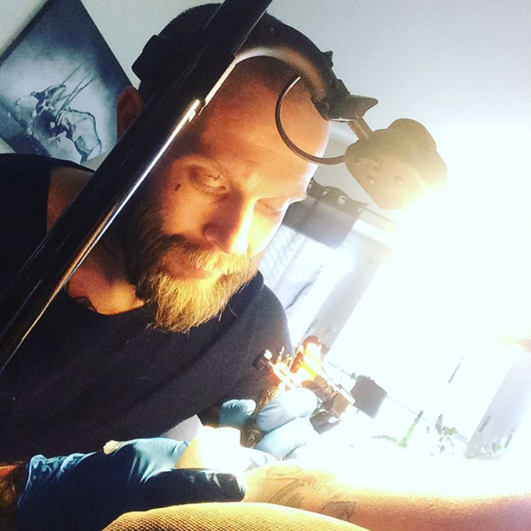

Om Mathias Thulin
Min karriär som tatuerare var ganska otippad. Den började ganska sent, jag var 33 år. De flesta börjar runt 18-20 års åldern. Tanken var dock aldrig att jag skulle tatuera någon annan än mig själv. Köpte en begagnad utrustning 2010 med ändamålet att tatuera endast mig själv, då jag var så trött på att vänta på lediga tider hos tatuerarna. Hade några få tatueringar vid tillfället men ville ha mer än de jag hade, många fler.
Har ritat till och från genom livet när suget att skapa fallit på. Detta visste min omgivning och de var inte sena med att erbjuda sin obefläckade hud till mitt förfogande när de hörde om min införskaffade "leksak", som det då var.
Det var inte förräns jag gjort min första tatuering på någon annan som jag insåg att det här kan vara något jag skulle kunna göra resten av mitt liv. Så från en leksak till ett yrkesverktyg var steget inte långt.
Stilen jag är mest bekväm med är semirealism i gråskala (black and grey) men kör även i färg. Som tatuerare är jag precis som min person, ärlig och noggrann, vilket innebär att jag gör inget jag inte känner tillförlit inför. Jag antar inte jobb/motiv jag inte själv känner ligger inom min kompetens. Att ta mig an en kund bara för de pengar de inbringar är för mig inget alternativ.
Har inte gått någon traditionell lärlingsperiod för att lära mig yrket utan är så kallad självlärd. Innan jag ens startade min första maskin lusläste jag internet på vad som var viktigt angående hygien och tillvägagångsätt för min blivande roll som tatuerare. Hängde även ofta hos en god vän som länge drivit en studio. Det gjorde att jag fick en djupare förståelse och kunskap om det praktiska, så som förberedelse och hur man går tillväga från början till slut i själva hantverket. Det artistiska jag redan hade, i form av erfarenhet av penna och papper, räckte till att börja med. Sakteligen, motiv efter motiv, växte jag som tatuerare och som konstnär.